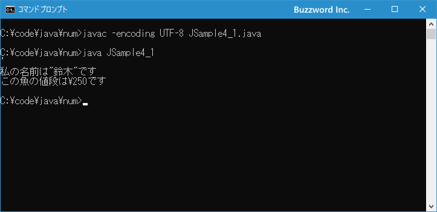

エスケープシーケンスを使った特殊な文字の表現
エスケープシーケンスとは、タブや改行といったキーボードから入力できない特種な文字を表現するための方法です。ここでは Java で用意されているエスケープシーケンスの一覧と使い方について解説します。
エスケープシーケンスの使い方
プログラムとして記述する場合にキーボードから入力できないような文字があります。例えば改行です。文字列を入力しているときに改行をキーボードから入力した場合は次のようになります。
System.out.println("こんにちは
お元気ですか");
上記の例では「こんにちは」と「お元気ですか」の間で改行を入力しようとしましたが、キーボードで Enter キーを押しても改行を表す文字が記述されるのではなく実際にプログラムが改行されてしまいます。文字列の途中で改行するとコンパイルエラーとなります。
そこでタブや改行といった特殊な文字を表現するために用意されたのがエスケープシーケンスです。エスケープシーケンスは「\」＋特定の文字の組み合わせで表現します。例えば改行文字は \n と表現することができます。(Windows環境では \ は ¥ と表示されます)。
先程の例はエスケープシーケンスを使うことで次のように記述することができます。
System.out.println("こんにちは\nお元気ですか");
エスケープシーケンスの一覧
Java で利用可能なエスケープシーケンスには次のようなものがあります。
\b バックスペース \t 水平タブ \n 改行 \r 復帰 \f 改ページ \' シングルクオーテーション \" ダブルクオーテーション \\ \文字 \ooo 8進数の文字コードが表す文字 \uhhhh 16進数の文字コードが表す文字
改行や水平タブについてはキーボードから入力できない文字のためエスケープシーケンスが用意されています。
「\'」は文字を表す場合に「'」という文字を記述したい場合に使用します。文字は文字をシングルクオーテーションで囲んで表しますが、「'」という文字をそのまま記述すると次のようになってしまいます。
char c = ''';
この場合、2番目の「'」が文字ではなく文字の終端を表す「'」だと解釈されてしまいます。結果として「'」と「'」の間にも文字が記述されていないと言うはエラーとなります。このような場合に、エスケープシーケンスを使って「\'」と記述することで、文字の終端の「'」ではなく文字の「'」と正しく解釈されるようになります。
char c = '\'';
同じように「\"」は文字列の中で「"」という文字を表したい場合に使用します。例えば「私の名前は"鈴木"です」という文字列をそのまま記述すると次のようになってしまいます。
String str = "私の名前は"鈴木"です";
この場合、2番目の「"」が文字ではなく文字列の終端を表す「"」だと解釈されてしまいます。このような場合に、エスケープシーケンスを使って「\"」と記述することで、文字列の終端の「"」ではなく文字の「"」と正しく解釈されるようになります。
String str = "私の名前は\"鈴木\"です";
このように Java のプログラムの中で「\」という文字はエスケープシーケンスが始まる特別な意味を持っています。その為、「\」という文字をエスケープシーケンスではなく単なる文字として使用したい場合には「\」の代わりに「\\」というエスケープシーケンスが用意されています。
String str = "この魚の値段は\\250です";
それでは簡単なサンプルプログラムを作って試してみます。テキストエディタで次のように記述したあと、 JSample4-1.java という名前で保存します。
class JSample4_1{
public static void main(String[] args){
System.out.println('\'');
System.out.println("私の名前は\"鈴木\"です");
System.out.println("この魚の値段は\\250です");
}
}
コンパイルを行います。
javac -encoding UTF-8 JSample4_1.java
その後で、次のように実行してください。
java JSample4_1

文字リテラルや文字列リテラルにおいて特殊な意味を持つシングルクオーテーション(')やダブルクオーテーション(")、そしてバックススラッシュ(\)をエスケープシーケンスを使って単なる文字として扱うように記述したあとで画面に出力しました。
-- --
Java で用意されているエスケープシーケンスの一覧と使い方について解説しました。
( Written by Tatsuo Ikura )

著者 / TATSUO IKURA
初心者～中級者の方を対象としたプログラミング方法や開発環境の構築の解説を行うサイトの運営を行っています。